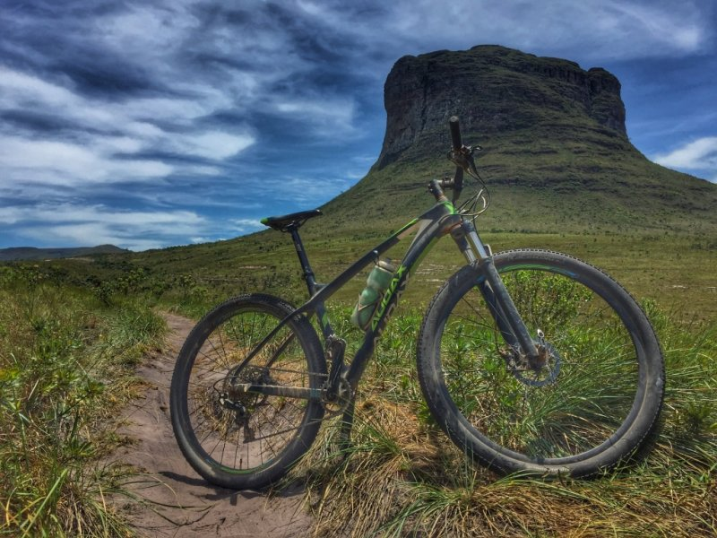
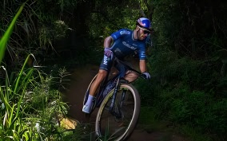
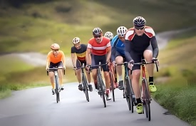

Utilizada por alguns como meio de diversão, por outros como meio de locomoção, e para outros, como instrumento para práticas esportivas, a bicicleta, bem como as práticas utilizando-a, tem tomado cada vez mais espeço na sociedade.
Conheça um pouco mais
Dentre diferentes tipos de bicicletas e modalidades, escolha aquela que mais se enquadra com você
Modalidades
| Moutain bike | Road bike |
|---|---|
| É uma modalidade de ciclismo que consiste em pedalar em terrenos irregulares, como trilhas, montanhas e florestas. | É uma modalidade que consiste em pedalar exclusivamente em trechos pavimentados, visto que tem enfoque na velocidade |
|  |  |
Submodalidades
Moutain bike
Bicicleta para a modalidade
Road bike
Bicicleta para a modalidade
A Bicicleta

Suspensão dienteira
Freios
Suspensão traseira
Transmissão
Central
×